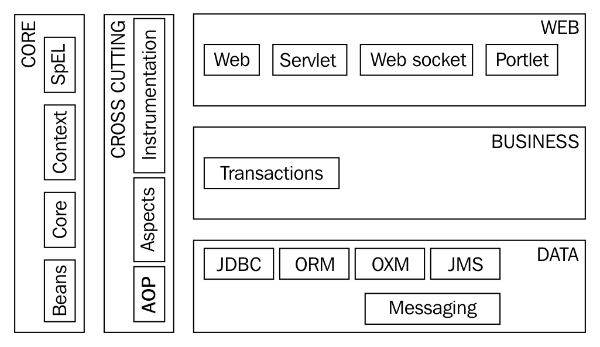

Introduction¶
Le Spring Framework est très largement utilisé dans la communauté Java. Il permet d’accélérer le développement d’applications d’entreprise (notamment le développement d’applications Web et d’API Web). Mais on trouve des applications basées sur le Spring Framework dans bien d’autres domaines.
Pour comprendre l’origine et l’apport du Spring Framework, il faut savoir que son principal auteur, Rod Johnson, voulait proposer une alternative au modèle d’architecture logiciel proposé par la plate-forme J2EE au début des années 2000.
Le Spring Framework vs. J2EE¶
J2EE (et ses successeurs Java EE et Jakarta EE) propose un environnement basé sur des serveurs d’application. Ces serveurs déploient et gèrent les composants fournis par les développeurs au sein de conteneurs logiciels. Ces composants (les Servlet, les EJB…) doivent être conformes à une spécification technique afin qu’ils puissent être pris en charge par un serveur. Le modèle d’architecture sur lequel se base J2EE a pour objectif de laisser aux serveurs d’application la responsabilité de fournir les services prenant en charge la sécurité, la gestion des transactions, la gestion des accès aux services externes (comme les bases de données)… Le développeur d’application n’a plus à gérer directement ces aspects. Mais il doit tout de même maîtriser ces problématiques et surtout connaître les différentes API nécessaires pour pouvoir développer des composants conformes à cette plate-forme. Ces API se révèlent souvent assez complexes, ce qui fait de J2EE un environnement techniquement ardu à appréhender. De plus, le succès de la virtualisation, du cloud computing et des architectures micro-services a remis en cause le choix du modèle initial de J2EE. Ce dernier est basé sur un serveur centralisé, monolithique, exigeant en ressources et peu adapté à des redémarrages fréquents. Le passage à Java EE n’a pas remis en cause ce modèle et beaucoup d’experts ont alors souligné son inadéquation avec les besoins des infrastructures actuelles.
À l’opposé, le Spring Framework propose de bâtir des applications qui embarquent elles-mêmes les services dont elles ont besoin. C’est pour cette raison, que l’on qualifie parfois le Spring Framework de conteneur léger. Plutôt que de recourir à un serveur complexe qui déploie des applications dans des conteneurs, c’est l’application qui, en utilisant le Spring Framework, devient un mini conteneur pour accueillir les services normalement offerts par un serveur J2EE. En soit, le Spring Framework ne fournit aucune solution nouvelle pour la réalisation de ces services. Mais il permet d’intégrer des solutions déjà existantes (et notamment celles conformes aux normes J2EE). Une des forces du Spring Framework est sa très grande modularité. En fonction des besoins techniques d’une application, il est possible d’incorporer tel ou tel module du Spring Framework et de laisser de côté ceux qui ne sont pas nécessaires. Il est donc possible de dimensionner les applications sans dépendre a priori d’un serveur monolithique. Cette approche s’est révélée plus adaptée à des infrastructures cloud et à la mise en place de micro-services.
L’idée centrale du Spring Framework est de n’imposer aucune norme de développement ni aucune contrainte technique sur la façon dont les développeurs doivent coder leurs applications. Le Spring Framework se veut non intrusif tout en se basant sur le principe de l’inversion de contrôle (Inversion of Control ou IoC) et sur la programmation orientée Aspect (Aspect Oriented Programming AOP). Il met en œuvre des modèles de conception (Design Patterns) tels que les factories pour fournir un environnement le plus souple possible.
Note
En fait, le Spring framework est une approche différente en terme d’architecture logicielle par rapport à la plate-forme J2EE. Le Spring Framework se présente comme une sorte de meta framework dont un des objectifs est d’aider les développeurs à intégrer d’autres frameworks (dont ceux conçus pour la plate-forme J2EE et ensuite Java EE).
Du fait de son niveau d’abstraction et de généralité, il est parfois difficile de comprendre immédiatement les apports essentiels d’un tel framework. On peut n’y voir qu’un simple outil pour concevoir des applications Web Java (puisqu’il est souvent utilisé dans ce contexte). Cependant, les principes à l’origine du Spring Framework touchent à des problématiques générales d’architecture logicielle et restent encore valides après presque 20 ans. La pérennité de ces choix est assez unique dans l’ingénierie logicielle récente. Même si la façon d’utiliser le Spring Framework a évolué au cours des années pour s’adapter aux styles de programmation, son noyau et les modèles de conception sur lesquels il repose restent inchangés.
Spring Boot et la configuration automatique¶
À l’origine, le Spring Framework n’est pas plus facile à apprendre que J2EE. Les auteurs du framework s’adressent en priorité aux ingénieurs expérimentés dans le développement d’application d’entreprise en Java. Il s’agit de leur fournir le plus de liberté pour implémenter les architectures les plus appropriées. Cette liberté demande de faire un travail important d’intégration des différents services techniques à l’aide de fichiers XML et donc, de bien connaître le fonctionnement et la configuration de ces services.
Avec l’évolution des pratiques et du langage Java, il est apparu évident que ce travail d’intégration peut être considérablement simplifié. D’une part, il est devenu possible de remplacer l’écriture de fichiers XML par l’utilisation d’annotations dans le code source (même si cela remet en cause l’idée que le Spring Framework ne doit pas être intrusif). D’autre part, beaucoup d’applications (notamment les applications Web) ont des architectures techniques très similaires. Il devrait être possible de bâtir plus rapidement des applications en se basant sur des modèles que l’on peut adapter par simple paramétrage.
Le projet Spring Boot est une extension du Spring Framework pour mettre en place rapidement des applications Java. Grâce à un système modulaire de dépendances et un principe de configuration automatique, il permet de disposer d’une structure de projet complète et immédiatement opérationnelle. La perte de souplesse dans les choix d’architecture est contre-balancée par la rapidité de mise en place et un large choix de paramètres de configuration. Spring Boot n’est pas un nouvelle version du Spring Framework. Il s’agit d’une utilisation particulière du framework, évitant aux développeurs de gérer une complexité technique souvent inutile au moment de l’initialisation d’un projet.
Note
Pour créer un projet Spring basé sur Spring Boot, il suffit d’utiliser le générateur de projet en ligne :
Ce générateur vous permet de créer une structure de projet Maven ou Gradle en intégrant des dépendances qui sont en fait autant de services ajoutés et configurés par défaut dans votre application : support des API Web, support de l’accès à des bases de données SQL ou NoSQL, gestion de la sécurité…
Les modules Spring Framework¶
Le Spring Framework est découpé en modules pour faciliter son intégration dans les projets.
Parmi ces modules, il y a les modules fondamentaux qui font partie du noyau du Spring Framework (core) :
- Core
Les classes fondamentales utilisées par tous les autre modules
- Beans
Le module qui permet de manipuler les objets Java et de créer des beans
- Context
Ce module introduit la notion de contexte d’application et fournit plusieurs implementations de ces contextes. Avec ce module, il est possible de construire un conteneur léger IoC.
- SpEL
Ce module fournit un interpréteur pour le langage d’expression intégré au Spring Framework (Spring Expression Language ou SpEL).
Un autre ensemble de modules permet d’intégrer la programmation orientée aspect (Aspect Oriented Programming ou AOP) dans une application. Le module Spring AOP est le module de base pour le support de l’AOP.
Les autres modules du Spring Framework permettent majoritairement d’intégrer dans une application des technologies tierces. Ainsi le Spring Framework agit comme une glu qui permet de construire des applications par ajout de services. Par exemple, Spring Web est le module qui permet de créer des applications Web et de les déployer dans un conteneur de servlets Java EE. Spring Data permet de gérer les interactions avec des bases de données en utilisant diverses technologies : JDBC, JPA, Hibernate, MongoDB…
Note
Spring Boot utilise ces modules et les incorpore comme dépendances dans vos projets. Il n’est donc pas nécessaire de les connaître pour démarrer le développement d’une application avec Spring Boot. Par contre, une bonne idée générale de l’organisation en modules vous permettra de vous retrouver plus facilement dans la documentation Spring.
Les projets Spring¶
En plus des modules, le Spring Framework s’est enrichi de projets bâtis sur le Spring Framework et qui apportent des fonctionnalités de haut niveau pour les développeurs. Spring Boot fait partie des projets Spring.
Parmi les projets Spring, on trouve notamment :
Documentation¶
Un autre point fort du Spring Framework est la qualité de sa documentation. Attention cependant, l’environnement du Spring Framework est très vaste et il est très facile de se perdre dans la documentation.
Pour commencer, vous pouvez consulter la documentation sur Spring Core :
https://docs.spring.io/spring-framework/docs/current/reference/html/core.html#spring-core
et plus généralement la documentation sur les principaux modules du Spring Framework :
https://docs.spring.io/spring-framework/docs/current/reference/html/index.html
Pour Spring Boot, vous pouvez vous référer à la documentation officielle :
https://docs.spring.io/spring-boot/docs/current/reference/html/
Pour avoir une vision d’ensemble des projets qui existent dans l’éco-système Spring :
Enfin les guides fournissent des réponses pratiques et rapides sur certains points techniques :